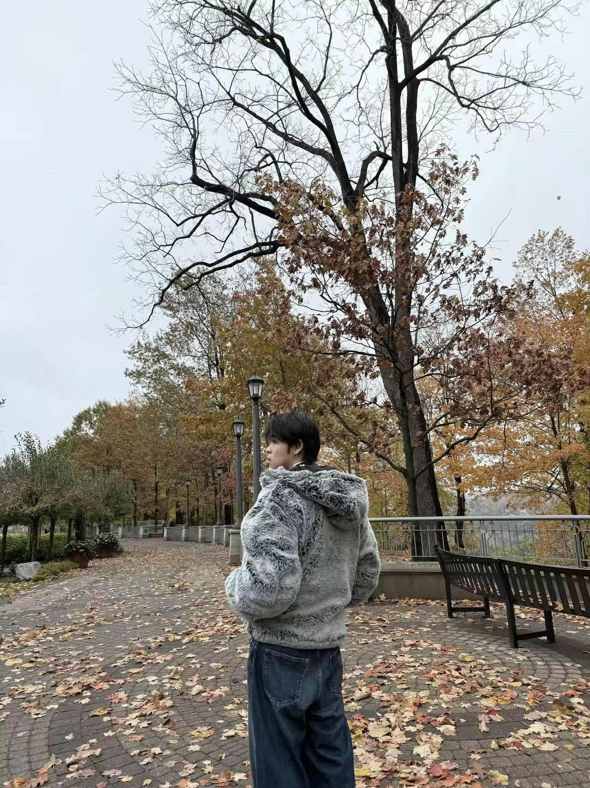

How I got here
I started by making small projects and learning by doing. Now I focus on user-centered design, research, and clear interaction patterns. I enjoy working with teams and keeping the process organized.
UX and interaction design
I bring creative ideas to messy problems, then turn them into simple interfaces people can use fast. I study in the Bachelor of Information program at the University of Toronto.

Cross-platform UI + interaction + UX research portfolio.
Selected projects across kiosk, mobile, desktop, console, and multi-modal systems.
I started by making small projects and learning by doing. Now I focus on user-centered design, research, and clear interaction patterns. I enjoy working with teams and keeping the process organized.
I am good at listening and aligning people. I like bringing a team together, building momentum, and shipping work fast without losing structure.
I value clarity, respect, and small improvements that add up. My design philosophy is simple: reduce confusion, show the next step, and make feedback obvious.
Outside of work, I play basketball, golf, and baseball. I follow F1 and I play video games. I am also a Mandarin hip hop music maker.
Bachelor of Information (BI)
The BI program mixes design, research, and technology. I practice human-centered methods, information design, prototyping, and basic development so I can build and test ideas quickly.
UX research · System UI · Prototype
I reframed a stressful parking payment moment into a clearer flow with stronger visibility, feedback, and recovery states.
Outcome: clearer confirmation and less uncertainty in high-glare, high-pressure situations.
Interface critique · Design reasoning
A structured critique of a real product interface, focused on learnability, consistency, and how interaction choices shape player confidence.
Outcome: turned product observations into concrete UI takeaways and improvement directions.
Interface design · Wayfinding · Prototype
A kiosk prototype for fast public wayfinding, with search, category browsing, and step-by-step route guidance.
Outcome: clarified navigation and reduced back-and-forth through a predictable find → route flow.
Desktop app UI · Interaction logic · Prototype
A desktop app that helps people plan shopping, track pantry freshness, and reduce waste through clear views and predictable actions.
Outcome: made pantry tracking faster through quick actions, expiry cues, and stable page-to-page state.
Mobile booking flow · Companion watch UI · Prototype
A patient booking concept that balances mobile self-service with clinic confirmation, plus a watch companion for reminders and quick actions.
Outcome: reduced scheduling friction with step-by-step booking and glanceable watch support.
Mobile service booking · Product flows · Prototype
A salon booking concept built around shorter steps, clearer service selection, and easier appointment management after booking.
Outcome: lowered cognitive load and made booking changes easier to understand on mobile.
Console UI · Menu design · Error prevention
A CLI quiz tool with build and play modes: add, list, remove questions, save/load sets, then run a quiz and review results.
Outcome: reduced confusion in a text-only flow using consistent prompts and simple recovery paths.
Game UI · Feedback loops · Front-end prototype
A Bulls and Cows style guessing game where each round uses feedback to narrow the search space and keep progress legible.
Outcome: created a readable guessing loop with consistent feedback and reliable game state.
Physical computing · Multi-modal interface · Reflection
A tabletop prototype that makes indoor air quality visible through ambient light, exact readouts, and a shareable local interface.
Outcome: turned invisible environmental data into something noticeable, interpretable, and discussable.
Concept storytelling · Prototype communication
Short profile videos that explain a prototype idea, the user need it addresses, and how it fits into real use.
Outcome: communicated a product concept through clear scenarios and a structured story.
I help teams move from ideas to decisions, then to deliverables. I keep communication simple, write down the process, and make sure the work stays connected to user needs.
LinkedIn is the best way to reach me.